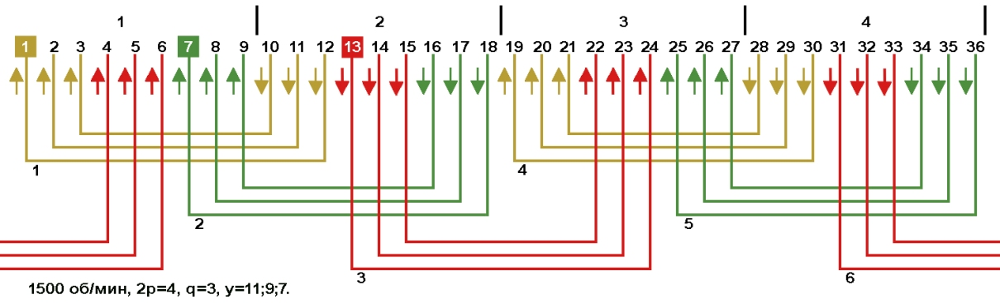
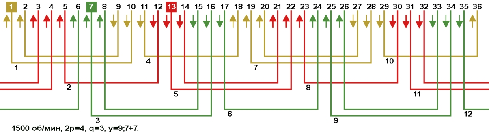
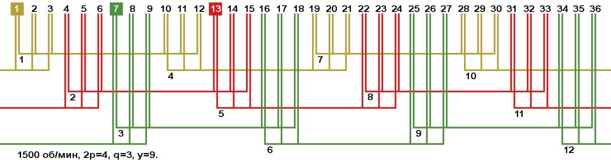

Перейти на главную страницу справочника.
Однослойные, одно-двухслойные и двухслойные обмотки со сплошной фазной зоной в электродвигателях 1500 об/мин, Z1=36.
Число пазов на полюс и фазу q=3 при Z1=36 и 2p=4. Фазная зона занимает 3 паза в полюсе (q=3).
- На Рис. 1 схема укладки концентрической однослойной обмотки. Стрелками указано направление мгновенных значений тока в фазных зонах. Катушки (катушечные группы) первой фазы "А" занимают пазы 1, 2, 3, 10, 11, 12, 19, 20, 21, 28, 29, 30 и находятся в фазных зонах своей фазы. Так же в фазах "В" и "С" стороны трёхсекционных катушек находятся в своих фазных зонах. Между левой и правой стороной каждой катушки пазы занимают две фазные зоны соседних фаз.
Рис. 1 
{kind=link}
- На Рис. 2 схема укладки равносекционной однослойной обмотки. Обмотка расположена в тех же пазах что и в схеме на Рис. 1.
Рис. 2
- На Рис. 3 схема укладки концентрической однослойной обмотки вразвалку. Визуально фазные зоны сдвинуты в лево, но стороны катушек находятся в своих фазных зонах.
Рис. 3 
{kind=link}
- На Рис. 4 схема укладки равносекционной однослойной обмотки вразвалку. Обмотка расположена в тех же пазах что и в схеме на Рис. 3.
Рис. 4
- На Рис. 5 схема укладки концентрической одно-двухслойной обмотки вразвалку. Обмотка расположена в тех же пазах что и в схемах на Рис. 3 и 4.
Рис. 5
- На Рис. 6 схема укладки равносекционной цепной однослойной обмотки. Обмотка расположена в тех же пазах что и в схемах на Рис. 1 и 2.
Рис. 6
- На Рис. 7 схема укладки равносекционной двухслойной обмотки. Обмотка расположена в тех же пазах что и в схемах на Рис. 1, 2 и 6.
Рис. 7 
{kind=link}
- Все выше показанные обмотки называются обмотками со сплошной фазной зоной, так как стороны катушек (катушечных групп) расположены в фазных зонах своих фаз.
Шаг по пазам у данных обмоток диаметральный.
Недостатком обмоток со сплошной фазной зоной являются большие потери в стали сердечника, вызванные несинусоидальностью МДС в воздушном зазоре.
- Электрические и магнитные характеристики у этих обмоток одинаковые. Пересчёт обмоточных данных при переходе с одной схемы на другую не требуется.
От схем на Рис. 6 и 7 сразу отказываемся, так как при диаметральном шаге у=9 расход провода и вылет лобовых частей будет таким же как и в схемах на Рис. 1 и 2.
Самая распространённая схема на Рис. 1 и её равносекционный аналог на Рис. 2.
Если нужно уменьшить вылет лобовых частей и расход провода, выбираем схемы на Рис. 3, 4 и 5.
- Для сохранения наилучших характеристик электродвигателя в обмотке со сплошной фазной зоной, схему укладки выбираем с минимальным вылетом лобовых частей и с равносекционными катушками Рис. 4. Соединение фаз в звезду.
Литература:
(Недостатки концентрических обмоток) Электрические машины, автор А.И. Вольдек, 1978, стр. 417, 418.
(Соединение фаз) Обмотки электрических машин. Авторы: В.И. Зимин, М.Я. Каплан, А.М. Палей, И.Н. Рабинович, В.П. Фёдоров, П.А. Хаккен, 1970, стр. 98, 99.
28.03.2019 г.